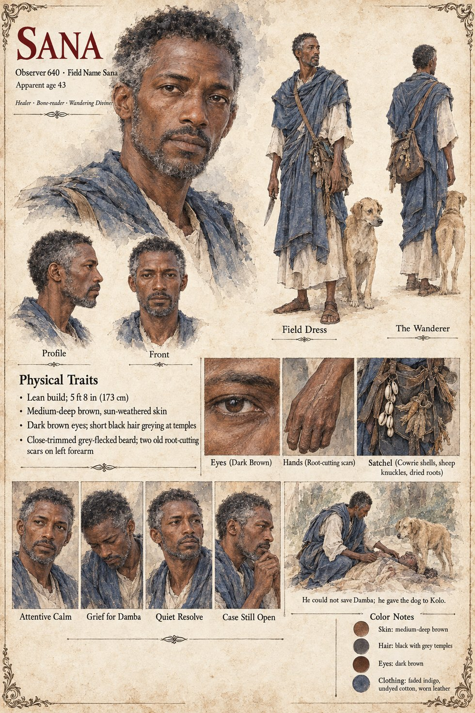

Sana
Observer 640, the Envoy of Case 0113 · healer and reader of bones, the wandering diviner · apparent age 43 on his sheet
A healer and reader of bones who walks the river towns and caravan camps of Danjeri with a satchel of cowrie shells, sheep knuckles and dried roots, consulted less for his cures, which are competent but unremarkable, than for the unhurried way he listens to a complaint before he touches the patient. That is his whole method: his value to the Corps lies almost wholly in what people tell him while they believe he is only listening. He is Observer 640, three years into a posting meant to last four; in his second year he took in a half-grown, rib-visible stray on the road between Kambaso and the salt-pans. There was no line on any form for companion, unbonded, non-operational, so he did not report it. He named it Doni, a word that meant, in the trade-tongue, roughly nothing at all.
Brought to the palace on the word of a caravan-master, he is the ninth physician to look at King Soriba's second son Damba, and he knows from the first examination that nothing local will help. He keeps coming back anyway. He tells his supervising desk that the household holds politically relevant intelligence, which is not a lie and not the reason; the reason is that Damba asks direct questions and expects direct answers. In the month of Ferren he decides, alone in a room above a dyer's shop, to use an Immortal Cell, a single dormant biological instantiation no larger than a date pit, which he requisitioned through a supply irregularity he believed he could justify afterwards. He has written the fiction (a spontaneous remission) and not what comes after it: the Cell would keep a body at the shape of its prime, and he means, so far as he lets himself mean anything, to carry the boy out of Danjeri within a few years. He has miscounted exactly one thing, the dog's own hunger. He leaves the satchel unattended for about as long as it takes to draw water from the courtyard well, and the sealed pouch smells to a dog's nose precisely like the dried meat it was packed beside.
Protocol on a compromised specimen is not ambiguous: retrieve the Cell if retrieval is possible, and destroy it, along with its host, if it is not. He runs the calculation in something under four seconds and arrives at the correct answer before his hand has finished moving to where a blade would have been. He does not reach for one. Damba's fever turns in the second week of Garren, too fast for the tea he brought or for the second plan he had assembled, a hollow reed, a goat's bladder and blood drawn from the one creature in Danjeri that now carries the Cell. The boy dies on the ninth day of Garren, with Sana at the bedside for the last two nights. The posting ends nineteen days later, on schedule. He finds the kennel-hand Kolo alone in the empty yard with the dog's head across his knees and tells him that the dog is his now and that he must never let anyone convince him it needs to be given up, and his voice cracks on the word never. He leaves Danjeri three days later and does not look back at the kennel yard.
His Interlude I filing closes the case as compromised, uncontained, non-recoverable within operational cost parameters, with an addendum appended without authorization noting that the specimen is a dog and that the desk does not know how to feel about it. Some sixty years on he files a routine request for the status of the closed case, and makes the same request at irregular intervals for several centuries; he keeps a small stone from the Kambaso road on the shelf above each new bed. The Archival Log's last word on him is that the loss was his and the sequence was not: Observer 640: unreviewed; no annotation entered. The second Observer of the case, 1,451, field name Yandé, has no sheet of her own and so no page here.
The manuscript gives his cover, his satchel, his listening and the crack in his voice on one word, and no age, face or build. The sheet's apparent age of 43, lean 5 ft 8 in (173 cm) build, medium-deep, sun-weathered skin, dark brown eyes, short black hair greying at the temples, close-trimmed grey-flecked beard, two old root-cutting scars on the left forearm, faded indigo wrapper over an undyed tunic and worn leather sandals are its own, as are its panels Attentive Calm, Grief for Damba, Quiet Resolve and Case Still Open, and its scene He could not save Damba; he gave the dog to Kolo. It draws the dog at his heel as a pale golden animal; the manuscript's Doni is sand-colored.
“He did not reach for one.”